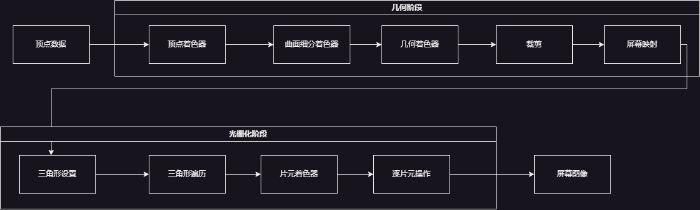

为什么要做“未命名”引擎呢？
做游戏，最常听到原因之一就是有表达的欲望，而自己又刚好可以通过游戏。做引擎也是一样，也是一种表达。
为什么要用Vulkan呢？
首先是对渲染有了兴趣，然后才有了要用Vulkan的打算。更有挑战，更面向未来。相比于为跨平台使用OpenGL和OpenGL ES，Vulkan更好的解决了这个问题。
渲染管线是什么
对比流水线，渲染的流水线就是要把一个三维场景描画成为一个二维的图像的过程，这中间有很多道工序。一个概念上的渲染流水线由下面的几个部分组成：
- 应用阶段：准备场景数据（场景组成、剔除看不到的部分、设置模型的渲染状态），输出渲染图元（点、面、三角形）；
- 几何阶段：进行逐顶点、逐多边形的操作，输出屏幕空间的顶点信息；
- 光栅化阶段：逐顶点、逐像素处理，输出最终的图像；

准备一下，窗口
为了能使用Vulkan，我们首先需要创建出窗口，用来显示渲染的结果。这里介绍一下OpenGL的glfw库，用来操作窗口。
1 | glfwInit(); // 初始化glfw库 |
但是，我们要将它设置成使用Vulkan API工作。
1 | glfwWindowHint(GLFW_CLIENT_API, GLFW_NO_API); // 不使用OpenGL或OpenGL ES |
接下来就是创建一个标题为“HELLO VULKAN”的窗口。
1 | GLFWwindow* window = glfwCreateWindow(1280, 720, "HELLO VULKAN", nullptr, nullptr); // 不会处于全屏模式，也不和其他窗口共享资源 |
当程序关闭，调用glfw的清理和关闭接口：
1 | glfwDestroyWindow(window); // 销毁窗口对象 |
使用Vulkan
Vulkan的实例、设备和队列
- Vulkan的实例
首先通过VulkanContext类和VulkanInstance类，设置创建Vulkan实例所需的参数，包括应用程序信息、所需的扩展和验证层等。
1 | // 创建Vulkan实例 |
通过glfw创建vulkan的展示表面VkSurfaceKHR，以便在窗口中使用Vulkan进行渲染。
- Vulkan设备
通过实例查找系统中与Vulkan兼容的设备。
- 物理设备（及其固定的功能）
- 逻辑设备（物理设备的软件抽象，是应用程序主要处理的对象）
Device类负责对Vulkan设备进行管理。查询并创建物理设备
- 设备队列
Vulkan设备执行提交给队列的工作。每个设备都有一个或者多个队列，每个队列都从属于设备的某个队列族（queue family）。队列族拥有相同功能同时又能并行运行。队列族的数量、每个族的功能以及每个族中的队列数量都是物理设备的属性。
通过查询设备支持的队列族，获取到支持图形操作（VK_QUEUE_GRAPHICS_BIT）和支持呈现到指定Vulkan表面的队列族，在之后用于处理图形渲染以及显示输出。
- 创建逻辑设备
在查看完所有连接的物理设备之后，我们就应该选择一个合适的设备，针对该设备创建逻辑设备。逻辑设备代表处于初始化状态的设备。在创建逻辑设备时，可以选择可选特性，开启需要的扩展等。
1 | // 根据参数createInfo在物理设备上创建逻辑设备 |
最后通过之前保存的队列信息，通过vkGetDeviceQueue方法获取队列的句柄，方便后续在逻辑设备上执行队列的操作。
- 交换链（SwapChain）
SwapChain用来请求窗口系统创建多个可用来代表Vulkan表面的图像对象，通过VK_KHR_swapchain扩展来提供这个功能。交换链对象通常以环状缓冲区的形式管理一个图像集。应用程序可以请求交换链中下一个可用的图像，渲染数据到图像里，然后把这个图像交还给交换链并准备显示。通过管理队列里的多个图像，可以将一幅图像展示到显示器上，同时对另一幅进行绘制。实现了常见的双缓冲模式。
SwapChain类负责创建和管理应用中的交换链。
- 渲染通道（RenderPass）
Vulkan中的渲染通道对象表示。一个渲染通道对象封装了多个通道，或者用于产生一系列输出图像的几个渲染阶段。渲染通道里的每一个通道称为子通道。每一个渲染通道对象可以包含许多子通道，但是即使是在只有一个通道和一个输出图像的简单应用程序里，渲染通道对象也包含关于输出图像的信息。
- 图像视图（ImageView）
资源，作为RenderTarget。
- 命令缓冲区（Commond Buffer）
队列的主要目的就是代表应用程序处理任务，这些任务就是记录到命令缓冲区中的一系列命令。应用将会创建包含需要完成的任务的命令缓冲区，进而提交到某个队列来执行。在记录任何命令之前，需要创建命令缓冲区。命令缓冲区并不直接创建，而是从池中分配。
- 栅栏（Fence）
在命令提交的方法中使用，用来等待本次提交执行的命令完成。在不使用Fence时，可以调用vkQueueWaitIdel
Vulkan的内存
- 主机内存（Host Memory）：CPU可以访问的内存，Vulkan的实现使用主机内存保存API内部的数据结构；
- 设备内存（Device Memory）：GPU设备可以访问的内存，用来分配图像对象和缓冲区对象。
最后
下一篇再继续思考怎么样通过程序化的语言来解释这个流程，API设置，场景设置，再到游戏的主循环。
1 | int main() |